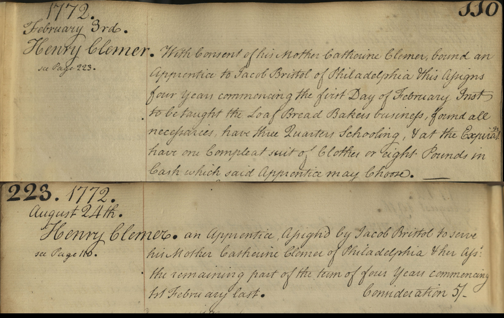
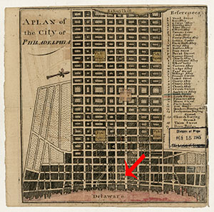

Gendered Indenture
We can use visualizations to look at a number of different characteristics of the dataset created from the Record of Indentures. In this section, we examine gender. How did experiences of indentured servitude or apprenticeship differ between men and women?1
The Story of Henry Clemer

Click here to examine the record of Henry Clemer.
Henry Clemer was indentured to Jacob Bristol as an apprentice baker for four years beginning February 3rd 1772. For the next 18 months Henry would be indentured to Jacob Bristol who, with his wife Sarah, ran a bakery in Laetitia Court.2 We can find a number of receipts in the papers of Benjamin Chew, a prominent 18th Century Philadelphian Lawyer and Chief Justice, who regularly bought loaves from Bristol. In a transcription of Chew’s receipt book we learn that on November 25th, 1785, Bristol was paid “Fifteen Pounds 9 [shillings] in full for Bread” but that “his son signed the Fathers hand being sore”. By linking these two datasets we learn where Henry lived, the type of clients he may have baked for and just how much bread Bristol’s bakery was producing. 3

Map of Philadelphia highlighting Laetitia Court.
However, Henry was not long for the baker's life. A second record from August 24th, 1772, details that his apprenticeship was transferred to a female master. The graphs above show this to be a very unusual situation. He is one of only seven male apprentices indentured to female masters. Henry's new master was in fact, his mother, Catherine Clemer.
We do know that children were sometimes indentured to their relatives. In his younger years Benjamin Franklin was apprenticed to his brother, a printer and later, in 1740, Franklin held the indenture for his nephew James. The indenture records dataset shows this to be predominantly a male to male arrangement. We also know that parents could give consent for their children to take up apprenticeships in the hope that learning a valuable trade would ensure their success in later life. However, in Henry Clemer’s case, the situation remains unclear and we do not yet know why the transfer of his indenture contract to his mother occurred.
Interestingly, the reverse of Henry and Catherine’s indenture contract - those between male masters and female apprentices - also appears to be unusual. Two recent APS blog posts ‘Indenture Mining: Making Pre-Industrial Tradeswomen Visible: Part I' and 'Part II' shed light on the difficulties encountered by indentured women in Colonial America.
{kind=link}
{kind=link}
{kind=link}
{kind=link}